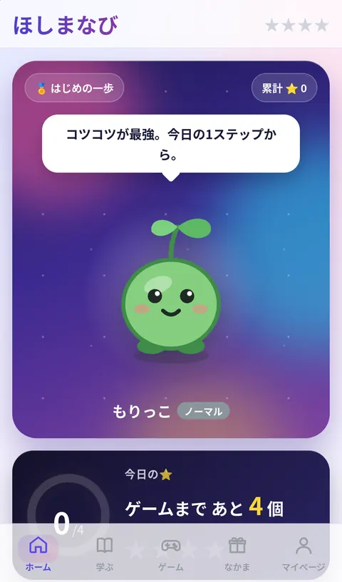
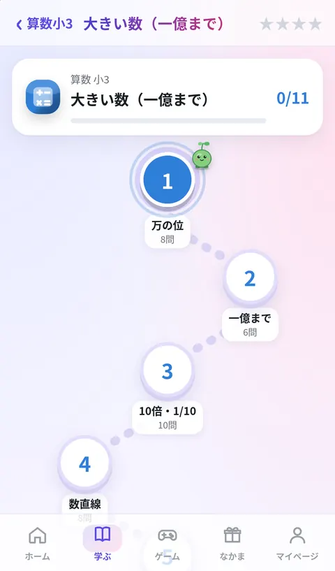
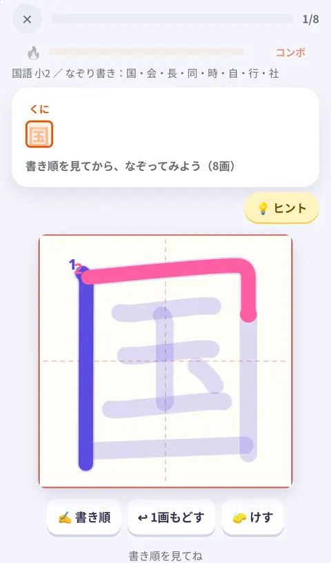
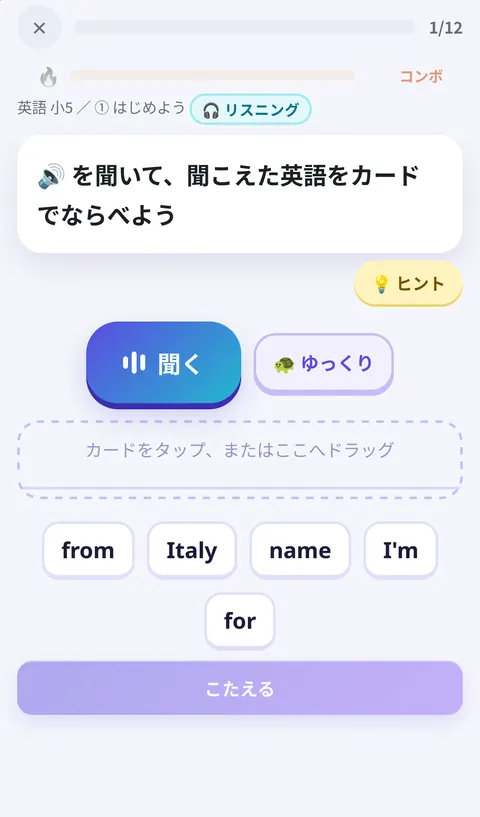
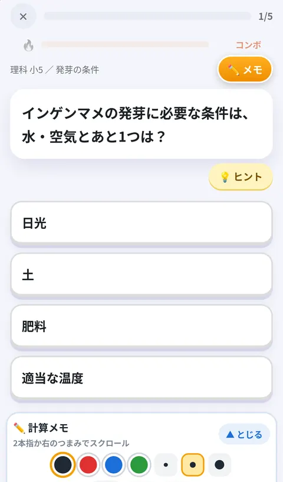

ほしまなびは、ずっと無料
ほしまなびは、小学生・中学生の子供が算数・国語・理科・社会・英語を勉強できる学習アプリです。利用料は無料で、広告も課金（アプリ内の支払い）もありません。アプリのダウンロードも不要で、スマートフォン・タブレット・パソコンのブラウザからすぐに使えます。
💴 0円利用料・課金・広告なし
📱 ブラウザですぐiPhone・iPad・Android・パソコン
📚 6教科・小1〜中3404単元・3,257ステップ
✍️ 漢字 2,032字書き順・なぞり書き・書き取り
小学生が学べる教科
| 教科 | 小学校で学べる学年 |
|---|---|
| 算数 | 小1〜小6（中学の数学も中1〜中3） |
| 国語・漢字 | 小1〜小6（中1〜中3も） |
| 生活 | 小1・小2 |
| 理科 | 小3〜小6（中1〜中3も） |
| 社会 | 小3〜小6（中1〜中3も） |
| 英語 | 小3〜小6（中1〜中3も） |
内容は学習指導要領（平成29年告示）にそっていて、学校で習う単元ごとに練習できます。学年は自由に選べるので、前の学年の復習や先取りにも使えます。
子供が続けやすい工夫
- 1ステップは数分。数問〜10問ほどで終わるので、宿題のあとのすきま時間に。
- ⭐とごほうび。6割以上の正解で⭐。⭐を4こ集めた日はゲームで遊べます。
- いろいろな問題の形。図の問題、〇×、ならべかえ、カード合わせ、数字ボタンの計算、英語のリスニング、漢字の手書き。
- まちがえた問題ボックス。まちがえた問題が自動で集まり、あとで復習できます。
アプリの画面






はじめ方
- 「無料ではじめる」からほしまなびを開きます。
- ログインしなくても、すぐに始められます（記録は端末の中に保存）。
- ログインすると、記録がクラウドに保存され、ほかの端末でも続けられます。
保護者の方は 保護者の方へ と プライバシーポリシー もご覧ください。
あわせて読む
ほかの使い方：海外に住む子どもの日本語の勉強に ・ 補習校の予習・復習に